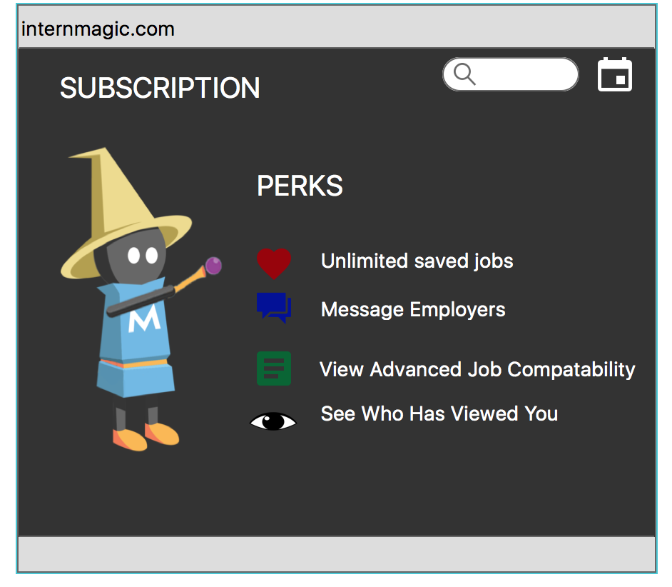

I worked for a start up called Pearit, based in Los Angeles over the summer and my role was
that of a UX Design Intern.
They had basic website setup and they wanted me to redesign some of their pages.
The pages that I redesigned were:
- The Home page
- The premium account page
- The cancellation page
- Student/Employee Account page
- Employer Account Page
Target Audience: Students, potential Employees, Employers
Methodology:
I first looked at the design of the current pages and performed heuristic evaluations to
look at the problems and the usability issues in the website.
I came up with the heuristic reports and gave it to my manager.
Based on the usability issues, I started to think of the changes that I had to make in the
website. I also changed some of the aesthetics wrt the websites. The premium account
page, and the cancellation page was completely built by me.

Target Audience: Students, potential Employees, Employers
Methodology:
I first looked at the design of the current pages and performed heuristic evaluations to
look at the problems and the usability issues in the website.
I came up with the heuristic reports and gave it to my manager.
Based on the usability issues, I started to think of the changes that I had to make in the
website. I also changed some of the aesthetics wrt the websites. The premium account
page, and the cancellation page was completely built by me.
Process:
The first page that I started to design from scratch was the premium account page an
the cancellation page.
For the premium account page, I first looked at all the elements that had to go into the
page and started building a wireframe using balsamic. Once this wireframe was
approved by my manager, I started to build the prototype using Photoshop and mock
plus.
I designed some of the elements on the page and also added all the content onto the
page.
For the Student/ employee, employer account pages, and the home page, I completely
redesigned the pages after doing a heuristic evaluation.
I first made wireframes, ost which I made the prototypes.